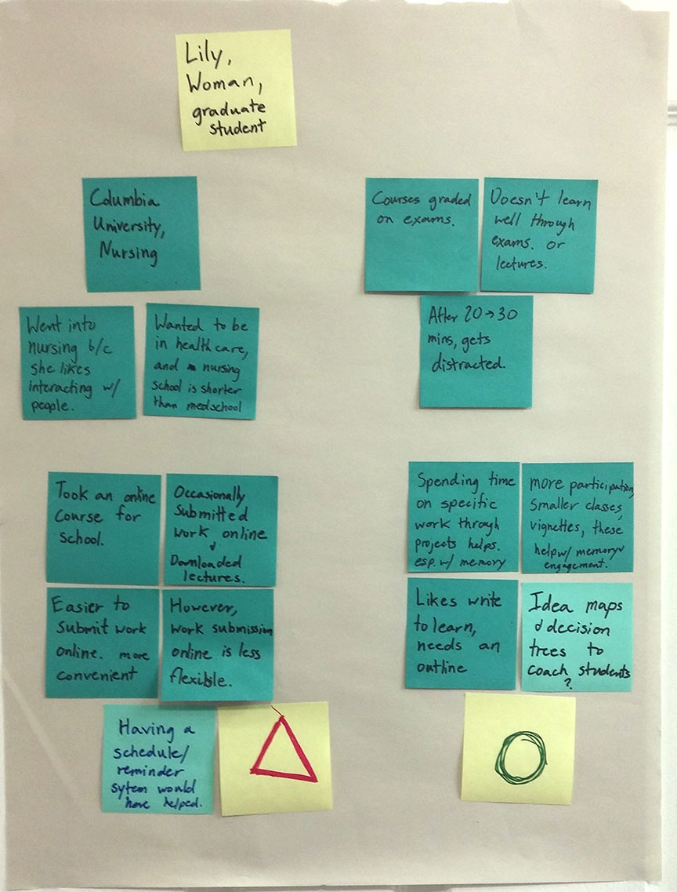
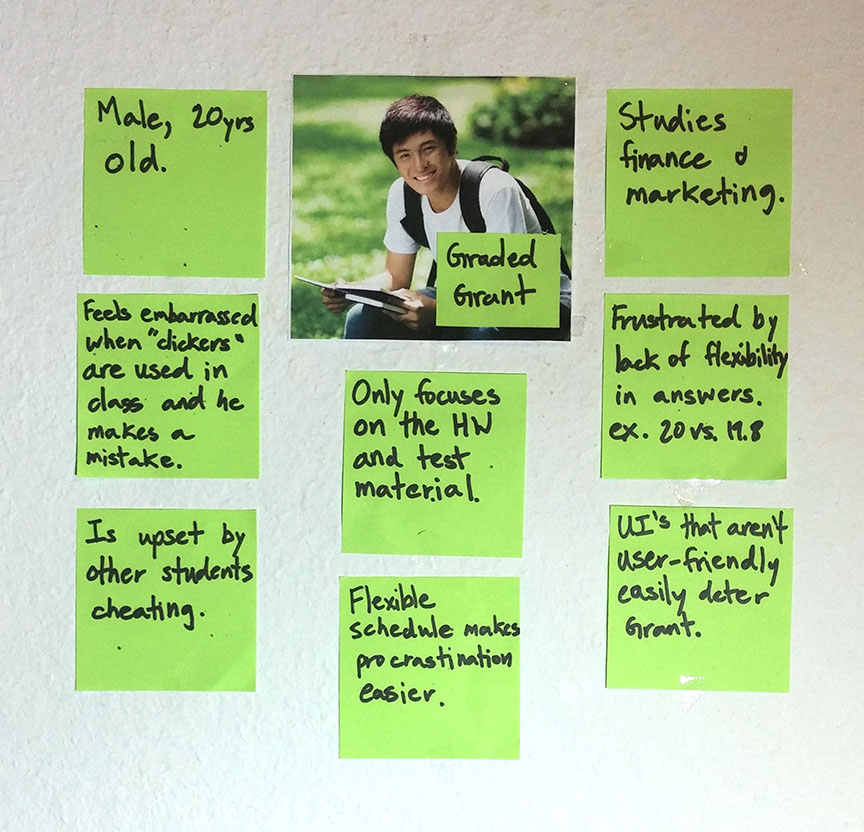

Online Education User Research
Question: How does online education affect motivation?
Authess
In the spring of 2015 I conducted user research for Authess, an early-stage education technology startup. The focus of this research was understanding students' experiences with online education assessment tools. At the end of the project I recommended areas of focus to address the needs and pain points of different user groups.
Interviewing users
I interviewed 8 students who had taken courses with an online component in the past year. In these interviews I asked them why they took the online courses and how the online platform affected their learning.
Creating User Portraits
I summarized notes from interviews on post-its, and organized them into related groups. I saw that within the same individual there was a mix of positive and negative experiences, so I labeled these groups with green circles and red triangles, respectively.
Morgan

Lily
Rusty

Creating Personas
As seen in the user portraits, most users have a mix of positive and negative experiences. Reading deeper into the notes, I saw that in online education, intrinsic motivation was associated with positive experiences. On the other hand, extrinsic motivation was associated with anxiety and cheating. This difference in motivation affected students' attitudes toward their classes, how they study, and how they perform. Though simplistic from a pedagogical perspective, this was a good place to start asking more questions.
Graded Grant
About
Graded Grant focuses on grades because grades are how he has been told he will get ahead in life.
Pain Points
- The flexible schedule of online courses allows Grant to procrastinate, leading to a buildup of work at the end of the semester.
- Grant is frustrated when other students cheat. When students take tests outside of the classroom and answers are multiple choice, it is easy for students to cheat.
Curious Curry
About
Curious Curry focuses on seeing how the content in the course connects and is applicable, because Curry sees a future where she uses this knowledge.

Pain Points
- Curry doesn't like how online courses only mark answers on assignments as right or wrong without an explanation. Having more thorough answers would help her to figure out what she misunderstood.
- Curry learns better when she engages in conversations with other students, and that can be lacking in online courses that don't have forums or collaboration built in.
Summary of Findings
Answers in Authess are based on problem-solving approaches, so Grant can still get credit for what steps he followed correctly. Because questions are not limited to multiple-choice, tests are more difficult to cheat on. Combined, Authess address two of Grant’s three pain points associated with online education assessment.
Authess' questions are based on ways of thinking and concepts, so Authess’ approach to assessment aligns with Curry’s learning goals. By explaining how the answers relate to concepts, Authess can help Curry to understand more deeply. Curry could be an easier target user in the beginning for this reason.
Result
Before the research, it seemed that the users contradicted each other. However, interviewing and segmenting users through personas helped resolve those contradictions. This was valuable for Authess as they developed their MVP and completed a round of funding.
Making Cooking More Sustainable
Question: How can we redesign the cooking process to reduce impact?
About the Project
My team and I looked at dinner preparation to explore ways that technology could be leveraged to make everyday actions more sustainable. After calculating the impact of dinner preparation, we found that the embedded cost of the food was more significant than the energy used to cook it. With this knowledge in mind, we designed an app called "ReMixipe" that helps people “remix” their recipes to reduce impact.
Team
My team was three people: Aman Kapur(Computer Science), Anne-Marie Buchenan(Mech Eng), and me. We all shared similar design roles: conducting interviews, making calculations, and interpreting results.
Pain Points
We started this process by interviewing people and developed two personas: Get 'Er Done Grant and Passionate Patricia.
- Grant values cost, efficiency and convenience.
- Patricia values quality, flavor and nutrition.
Comparing the Impact of Food and the Stovetop.
Cost to Use
To look at the energy impact of cooking food, we measured the energy draw of a stovetop while food was cooked on it.
Cost to Produce and Dispose
To analyze the environmental impact of a stove, we ran a Life-Cycle Assessment on it. This meant basically looking at what a stovetop is made of and how much of each material. We then multiplied the total amount of each material by the environmental cost of that material(Ide-Mat 2012).
With these combined measurements, we had an estimation of the cost to produce, use, and dispose of the stove top.
But then we ran a life-cycle assessment on an "average meal," which included meat, starch, and vegetables. What we found was that the vast majority of impact from a meal comes from the food and not the stove itself.

This led us to look to the next stage: designing a mobile app that recommends modified recipes.
Changing the Decision-Making Process
So, how does one go about helping people make different food choices? Guilt-tripping might be the usual route for environmentalists, but we believe there's a better way. People we interviewed already have between 10 and 20 recipes that they cycle through. People cook what they cook because they know those recipes and feel comfortable with them.
We envisioned an app that helps people cook more sustainable meals by modifying the recipes. This is a viable solution because it does not require a significant change in behavior, and it is in line with our personas' values. Grant likes to save money, and Patricia cares about the health of her children. A shopper can often save money and make healthier food by reducing the meat cooked or using different meats. For example, tofu is cheaper than beef, and it's more healthful. However, as the late Boromir might say: "one does not simply replace meat with tofu." And he's correct.
The app that we propose does more than substitute. It takes in recipes and creates a profile of the various flavor compounds in the food and how they work together. When ingredients are substituted, new cooking methods and ingredients are suggested to achieve an appealing alternative. Over time, the app will collect feedback from the user to develop an understanding of the user's preferences. Like a good DJ, it feels the crowd and plays to the taste of its audience.
How to Use ReMixipe
- Input a recipe, verbally, via web, photo, or typing.
- Get back recipes with various remixes to see how they can be changed or scaled.
- Choose a recipe, and shopping list is generated with shopping places.
- After meal is over, recipe app suggests remixes.
Making it into an app.

After this class ended, I developed the idea further on my own. The mockups and my process for designing them can be found here.